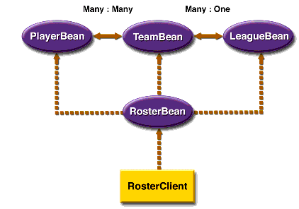

www.netbeans.org
Feedback
java.sun.com
|
Download
www.netbeans.org |
|
API
Feedback java.sun.com |
Overview of the Roster Module
The
Rostermodule maintains the team rosters for players in sports leagues. The example has five components. TheRosterClientcomponent is an application client that accesses theRosterBeansession bean through the bean's remote interfaces.RosterBeanaccesses three entity beans--PlayerBean,TeamBean, andLeagueBean--through their local interfaces.The entity beans use container-managed persistence and relationships. The
TeamBeanandPlayerBeanentity beans have a bidirectional, many-to-many relationship. In a bidirectional relationship, each bean has a relationship field whose value identifies the related bean instance. The multiplicity of theTeamBean-PlayerBeanrelationship is many-to-many: Players who participate in more than one sport belong to multiple teams, and each team has multiple players. TheLeagueBeanandTeamBeanentity beans also have a bidirectional relationship, but the multiplicity is one-to-many: A league has many teams, but a team can belong to only one league.Figure 8-1 shows the components and relationships of the
Rostermodule. The dotted lines represent the access gained through invocations of the JNDIlookupmethod. The solid lines represent the container-managed relationships.

|
Download
www.netbeans.org |
|
API
Feedback java.sun.com |
All of the material in The J2EE(TM) 1.4 Tutorial is copyright-protected and may not be published in other works without express written permission from Sun Microsystems.